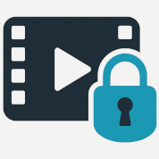
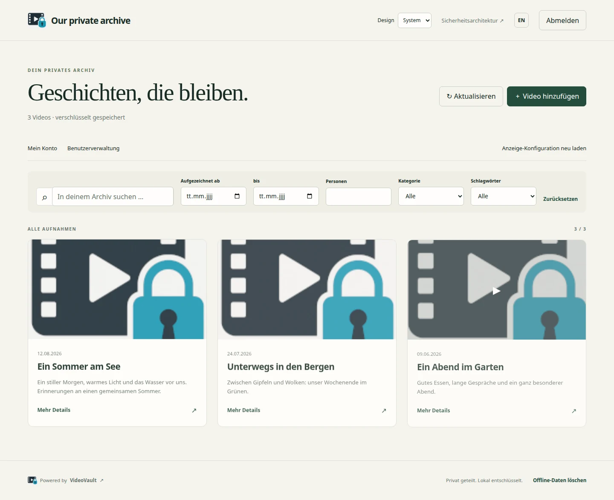
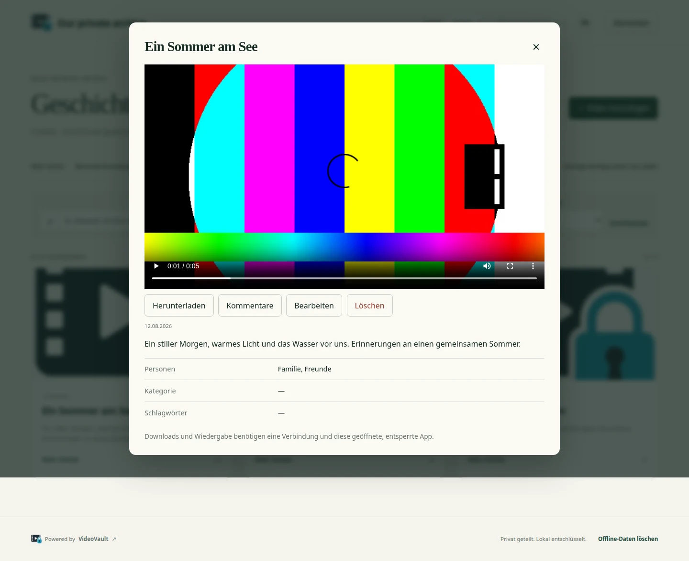
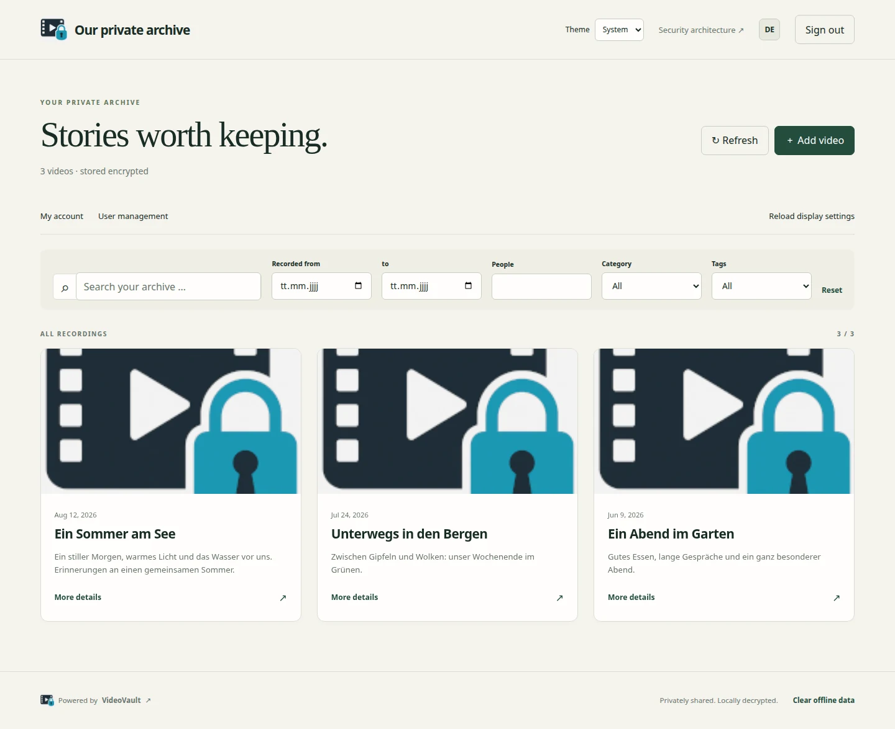
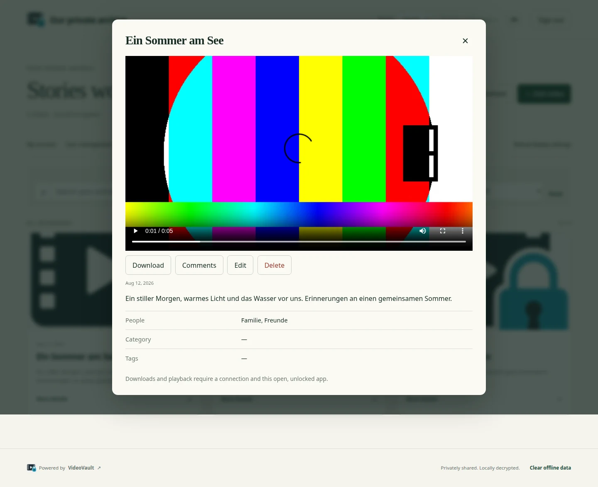

Finden, was ihr sucht
Stöbert durch Vorschaubilder, Titel und Beschreibungen. Sucht nach Begriffen oder grenzt die Übersicht mit den eingerichteten Filtern ein – etwa nach Aufzeichnungsdatum oder eigenen Angaben.

VideoVaultDer erste Urlaub, ein Geburtstag, ein ganz normaler Sonntag: Manche Aufnahmen gehören einfach zu euch. VideoVault gibt ihnen einen gemeinsamen Platz – verschlüsselt und für die Menschen, die ihr einladet.

Ein Archiv für die Familie, den Freundeskreis oder eure kleine Gemeinschaft. Alle eingeladenen Mitglieder haben Zugang zum gemeinsamen Archiv.
Stöbert durch Vorschaubilder, Titel und Beschreibungen. Sucht nach Begriffen oder grenzt die Übersicht mit den eingerichteten Filtern ein – etwa nach Aufzeichnungsdatum oder eigenen Angaben.
Öffnet ein Video, lest seine Details und schaut es direkt im Browser an. In den Kommentaren könnt ihr Erinnerungen teilen. Ein Download speichert das entschlüsselte Video auf eurem Gerät.
Mit der Editor-Rolle könnt ihr Videos und Vorschaubilder hochladen, beschreiben und später bearbeiten oder ersetzen. Die Dateien werden auf eurem Gerät verschlüsselt, bevor sie zum Server gelangen.

Ihr braucht keinen gemeinsamen Account: Jede Person meldet sich mit ihrem eigenen Benutzernamen und Passwort an. Die Verwaltung lädt Mitglieder ein und vergibt die passenden Rechte.
Rollen lassen sich kombinieren. Welche Aktionen ihr seht und nutzen könnt, richtet sich nach eurem Konto.
Videos, Vorschaubilder, Titel, Beschreibungen und Kommentare werden im Browser verschlüsselt. Euer Passwort entsperrt die Archivschlüssel lokal; es wird nicht als Klartextpasswort an den Server gesendet. Der Server speichert die geschützten Inhalte, ohne die Schlüssel zum Lesen zu besitzen.
Privat bedeutet dabei nicht, dass alles unsichtbar ist: Kontodaten sowie Aufzeichnungsdaten und zusätzliche Metadaten bleiben für den Server lesbar. Alle Mitglieder teilen sich die Archivschlüssel. Wer Inhalte oder Schlüssel bereits kopiert hat, verliert diese Kopien durch das Löschen eines Kontos nicht.
Die Sicherheitsarchitektur: Schutz und Grenzen verständlich erklärtVideoVault läuft im Browser auf Computer, Tablet und Smartphone. Unterstützt euer Browser die Installation von Web-Apps, könnt ihr VideoVault auch auf dem Startbildschirm ablegen. Eine gesonderte App aus einem Store ist dafür nicht nötig.
Der bereits geladene Katalog und geladene Vorschaubilder bleiben verschlüsselt auf eurem Gerät verfügbar. Nach erneutem Öffnen entsperrt ihr sie mit eurem Passwort. Für Videos, Downloads und Kommentare braucht ihr eine Verbindung; die Videoansicht muss während Wiedergabe und Download geöffnet bleiben.
VideoVault ist Open Source und wird auf einem eigenen Server betrieben. Für Installation und Updates stehen ein Docker-Image sowie ein Release-ZIP bereit; alternativ lässt sich die Anwendung aus dem Quellcode bauen. Die Einrichtungsassistenten konfigurieren Datenbank und Dateispeicher, Titel und Bilder sowie Metadaten, Filter und Sortierung und legen den ersten Administrator an. Für den Zugriff über das Internet ist HTTPS über einen vorgeschalteten Proxy nötig. Zum Betrieb gehören regelmäßige Updates, ausreichend Speicherplatz und geprüfte Backups der Datenbank, verschlüsselten Dateien und Installationsdaten; aufbewahrte Backups ersetzen keine verlorenen Benutzerpasswörter oder Archivschlüssel. Die Installations- und Konfigurationsanleitung, der Docker- und Release-Leitfaden und die Sicherheitsarchitektur beschreiben Einrichtung, Wartung und Schutzmodell im Detail.
The first holiday, a birthday, an ordinary Sunday: Some recordings belong with the people who made them. VideoVault gives them a shared home – encrypted and for the people you invite.

An archive for your family, friends or small community. Every invited member has access to the shared archive.
Browse thumbnails, titles and descriptions. Search for words or narrow the gallery using the configured filters – such as recording dates or your own custom fields.
Open a video, read its details and watch it right in your browser. Share your memories in the comments. Downloading saves the decrypted video to your device.
With the editor role, you can upload videos and thumbnails, describe them and edit or replace them later. Files are encrypted on your device before they reach the server.

There is no need to share an account: Everyone signs in with their own username and password. Administrators invite members and assign the appropriate permissions.
Roles can be combined. The actions you see and can use depend on your account.
Videos, thumbnails, titles, descriptions and comments are encrypted in your browser. Your password unlocks the archive keys locally; it is not sent to the server as a plaintext password. The server stores the protected content without holding the keys needed to read it.
Private does not mean everything is hidden: Account information, recording dates and additional metadata remain readable by the server. All members share the archive keys. Deleting an account cannot take back content or keys someone has already copied.
The security architecture: protection and limits explainedVideoVault runs in the browser on computers, tablets and smartphones. If your browser supports installing web apps, you can add VideoVault to your home screen. There is no need for a separate app from an app store.
The catalog you have already loaded and previously loaded thumbnails remain available encrypted on your device. Unlock them with your password after reopening the app. Videos, downloads and comments need a connection; keep the video view open during playback and downloads.
VideoVault is open source and runs on your own server. A Docker image and a release ZIP are available for installation and updates; you can also build the application from source. Setup assistants configure the database and file storage, title and images, metadata, filters and sorting, and create the first administrator. Internet access requires HTTPS through a reverse proxy. Running an archive includes regular updates, sufficient storage and tested backups of the database, encrypted files and installation data; keeping backups does not replace lost user passwords or archive keys. The installation and configuration instructions, Docker and release guide and security architecture cover setup, maintenance and the protection model in detail.